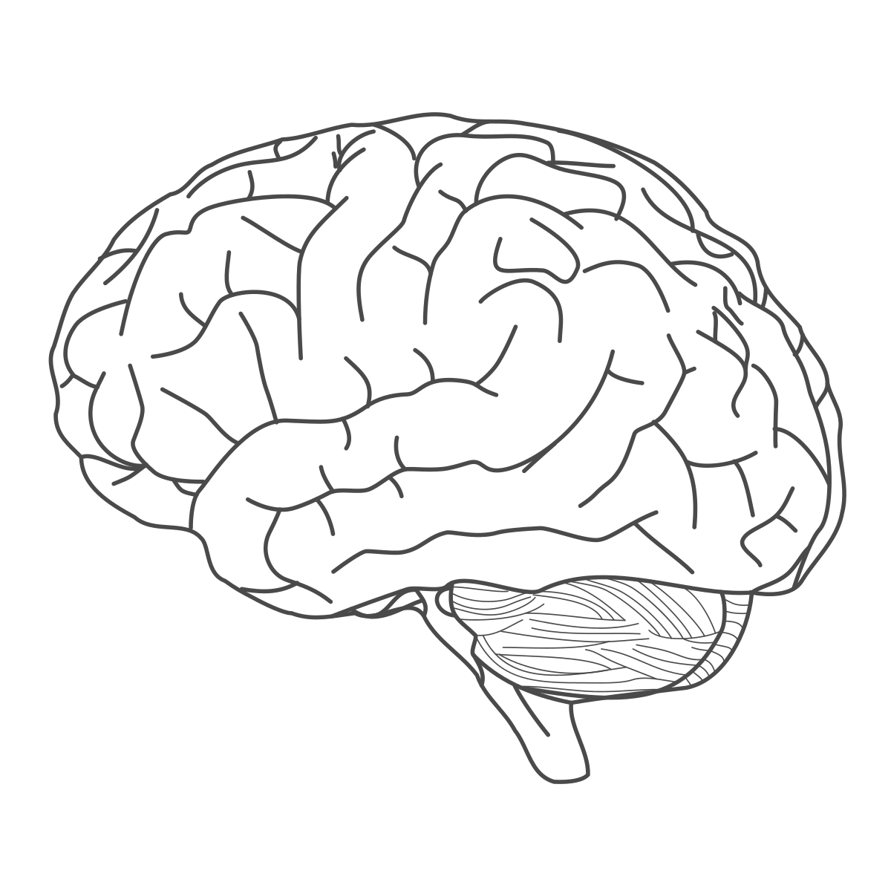

Across psychology, neuroscience, and computer science, sequencing effects such as blocking and interleaving dramatically alter behavior. Yet findings often conflict across fields. Recent work can bridge this gap by revealing how learning order shapes internal representations.
Leveraging SfN’s breadth of expertise, this nanosymposium brings together neurobiology, psychology, and computational science to build a unified understanding of how learning schedules shape representations to support learning, generalization, and flexible behavior.